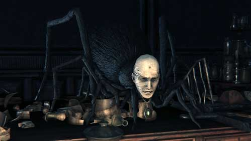

Patches the Spider |
|
|---|---|
|  | |
| General Info | |
| Location | Drops |
| Lecture Building | 5453 Blood Echoes Great One's Wisdom |
Patches the Spider is a recurring non-player character in the Souls games (called Patches the Hyena and Trusty Patches in previous games), who makes an appearance as a Nightmare Apostle in Bloodborne.
He is voiced by William Vanderpuye, who also voiced Lautrec of Carim in Dark Souls as well as the Male Aged player voice in Bloodborne.
Patches the Spider, like all his Souls counterparts, is an NPC that promises the player character some form of treasure, only to betray them and put them in extreme peril. Once the Hunter escapes that peril (or dies), and confronts Patches, he will beg for forgiveness, and become a merchant.
" Remember: no matter the circumstances, there will always be people willing to push you down a hole."
Location
- Patches can be first discovered after defeating Vicar Amelia and having entered the Forbidden Woods at least once. He will replace the regular inhabitant of any of the red-lantern windows in the Frontier or Yharnam. The quickest method to meet him is to simply use the Central Yharnam lampstand and speak at the window several paces away (if, however, you wish to meet this NPC for the first time after defeating Rom, seek the window formerly containting Young Yharnam Girl or the area beneath Healing Church Workshop in Cathedral Ward, which contains the only inhabitant who stays alive even after the Blood Moon appeared). Meeting him will prompt him to offer you the Tonsil stone, which unlocks the Lecture Hall, 1F if the Hunter allows themselves to be grabbed by the Lesser Amygdala above the door to Yahar'gul, the Unseen Village. Speaking to Patches again will get him to repeat his suggestion that you go to the right of the Grand Cathedral to discover something grand. Note that after the player zones out of wherever they spoke to Patches, he will be gone and the real inhabitant of the residence will return.
- This character can then be found at Lecture Hall (1st floor) where you may talk to him through the door immediately outside the room with the lamp.
- Then, in the Nightmare Frontier, Patches will set a trap by dropping coins and a glowing treasure above a poison pit. Approaching this will trigger a cutscene where a POV Patches will watch the Hunter from some grass, then scurry out and push them into the pit, laughing. (You can spot him on the rock wall above the item, and if you throw an object like a pebble at him he will fall, but there is no safe way to reach the item without triggering the animation and being pushed.)
- Finally, you may have a face to face encounter with him via Lecture Building 2nd floor. To find him, you must access from a ladder on the second floor, kill the giant with flaming hands and go down the ladder, he will we blocking the door of this room.
- Can this NPC be an ally?: Yes
- Can this NPC be an enemy?: Yes
- When confronted, gives the Beg for Life Gesture.
- Selecting the either dialogue option, then talking to Patches again gives the Anti-Clockwise Metamorphosis Rune.
- Drops: If killed, gives 5453 Blood Echoes and Great One's Wisdom.
- If you kill Amygdala after meeting him in person, he will disappear, leaving the Great One's Wisdom behind on the desk where he once stood.
- Will also drop the Great One's Wisdom in the swamp, if shot down from the cliff in Nightmare Frontier. He will drop nothing if killed in the Lecture Building later. (Killing him after killing Amygdala caused him to drop the item in my game)
After this conversation, Patches will appear randomly in the Chalice Dungeons of your creation and offer you the Consumables sold at the Bath Messenger, albeit at exorbitant prices. video demonstration
Dialogue
Behind a lantern( Any house w a resident will be temporarily replaced, see location information):
...Oh, a hunter of beasts, are you? Glory be. You know not the value you possess.
...But, more's the pity...
The hours of the night are many, and the beasts more than I can count. A veritable hunt unending!
Not even death offers solace, and the blood imbibes you. Ha, a most frightful fate, oh my.
But I'm willing to do you a kindness.
Step lightly round to the right of the great cathedral, and seek an ancient, shrouded church.
...The gift of the godhead will grant you strength...
Yes, I'm unquestionably certain, heheh...(gives Tonsil stone)
Talk again:
Not even death offers solace, and the blood imbibes you. Seek you the ancient, shrouded church hidden to the right of the main cathedral. ...The gift of the godhead will grant you strength...
Cutscene in the shrouded church:
Heh heh heh heh...Oh Amygdala, oh Amygdala...
Have mercy on the poor bastard...Hah hah hah!
Behind the door in Lecture Building 1F:
(laughs)
What a joy it is, to behold the divine.
It must be such a pleasure. You're in my debt, you know.
You're in nigh on a beast of the field, but here you are, treading a measure with the gods.
Talk again:
Heh heh...Are your feet as fat as your wits?
Oh, cease this dithering! Take the plunge! Throw yourself to the wolves!...Heh heh heh...
Talk again:
Hah hah hah! Don't dally, you lucky scamp! The gift of the godhead
cometh! Heh heh heh... yes... Ha hah!
When confronted from behind after being ambushed by him and killing Amygdala <Even if still alive he says this>:
Oh, this cannot be, you cannot be... No, you didn't... ...How did this come to pass?
Hmph! Now, wait just a moment... Do you think ill of me, me?
"No":
Indeed, I should think not! I shared with you a thing most secret. Now you're witness to a miracle, and all the stronger for it! You should appreciate it, if you've a grain of gratitude in you! Heh heh... yes, appreciate it! Hah hah hah!
"Of course I think ill of you!":
Oh, it pains me to hear it. You've made yourself a misreckoning. I shared with you a thing most secret. Now you're witness to a miracle, and all the stronger for it! It's plain as a pikestaff. Now, say in my heart, you were as a lamb to my God. Well, you weren't to know, and it wasn't for you to know. All's well, that ends well, I say. laughs
Either way he gives a Rune as a peace offering of sorts:
No matter. Such details are trifling. We're fast friends by now. Let this express what words cannot.*gives Anti-Clockwise Metamorphosis rune*Oh, doubt me not, sweet compeer. What is friendship, but a chance encounter? laughs
Ah, well met. My apologies, but I feel a profound thought occurring... On the good grace of a certain god, and the way he meted out his love. *laughs*
After killing Amygdala new dialogue appears:
Ahh, well met. This is a most pleasing encounter. You see, I must depart
erelong. My god is lost to me, so I must away to find another.
If the fates are kind, out paths may cross again. Sooner still, if you were
to take the leap... Heh heh heh... Hah hah hah!
Talk again:
Oh, think not of poor Amygdala. Upon that piteous bastard, you
bestowed salvation. Heh heh... All's well, that ends well... Heh heh heh...
Talk again:
Oh, think not of poor Amygdala. Upon that piteous bastard, you bestowed salvation.
Upon Dying:
Ergh, that was uncharitably done... That was uncharitably done, dear friend...
Encounter in Chalice Dungeons:
Aah! The sight of you is as balm to my eyes!
Truly, you are an indubitable, irrefutable friend!
And, my dear compeer, I vow once more to ease your burden!
Leave:
The time has come again I fear. But if the fates smile upon us, we'll soon meet again.
Farewell, dear friend.
Lore
- Could be based on Atlach-Nacha, a giant spider with a human head
Other Notes:
- Random bug where Patches will commit suicide for no apparent reason. Selected "Not at all" dialogue option, exhausted his dialogue, opened door beside him, and then proceeded up the ladder. Once the top of the ladder was reached I received blood echoes. Went back down and Patches was gone and a Great One's Wisdom was in his place. A few stories have surfaced confirming glitch. No information on how or why it happens. (This happened to me selecting the other dialogue option, too. Although the Great One's Wisdom didn't appear in his place....)
- Another random bug seems to occur when you enter the frontier before speaking to patches. (Needs comfirmation) When I first spoke to patches after entering the frontier, he "begged for my forgiveness" before I fell into the trap. (However I did receive the tonsil stone and spoke to him through the window of the first floor lecture building)
- Male Aged Voice is the same voice as Patches.
Gallery
{kind=link}
{kind=link}
{kind=link}
 Anonymous
AnonymousFirst time I saw him I killed him by accident but had no idea he was Patches. But then I remember how he screwed me over twice in Dark Souls 3 and killed him out of spite.
- Anonymous
Just saw this guy for the first time in the Nightmare place and killed the f**k out of him instinctively. He said something while dying that made me realize I didn't have to kill him. Now I feel bad =(
- Anonymous
Patches was probably a regular guy who wanted to loot Yahar'gul, but he was accosted by strange people yelling, "ᛗᚨᚲᛖ ᛏᚺᚨᛏ ᛒᚱᛟᛏᚺᛖᚱ ᛁᚾ ᚲᚺᚱᛁᛊᛏ ᚨ ᛊᛈᛟᛞᛖᚱ"
- Anonymous
- Anonymous
This guy is talented. I shot him off the wall and he STILL managed to push me off
- Anonymous
I was able to get the 15% anti-clockwise metamorphosis from him and the beg gesture after killing Amigdala in the Frontire, the The One Reborn.
- Anonymous
yeah didn’t even know this was a npc. with the combination of a hate for spiders and especially ones with a human head. i automatically beat the **** out of him in second floor lecture hall. saw him block the door and started freaking out. welp time to wait for the next cycle to get the rune
- Anonymous
Theoretically, he could kick you and 7 of your summons off a ledge at once
- Anonymous
Managed to miss him until lecture hall floor 2 on both runs.
- Anonymous
If you talk to him in the forbidden woods, them walk to Gilbert's window, patches will be the one talking instead... glitch or deepest lore?
- Anonymous
- Anonymous
Killed him in Lecture Hall and he still showed up in the Frontier.
- Anonymous
"Random bug where Patches will commit suicide for no apparent reason."
this is the funniest thing I've ever read on this wiki,,,,, WHAT
- Anonymous
I'm doing my first BL4 run and came across quite the surprise....Full charge attack left him at 1hp. He lunged and 1 shot me...I have to be the only person in history to die to him in the lecture hall and now I'm questioning if I am even good at this game.
- Anonymous
- Anonymous
- Anonymous
Terrified of spiders, panic killed him the lecture hall. RIP stamina rune
- Anonymous
I talked to him, killed the Amygdala, Went to the spot (He wasn't there), and came back to him and he gave me the gesture
- Anonymous
What happens if i dont go to lecture hall 1 and i just meeting for the first time through lecture hall 2?
- Anonymous
Patches the Spider is what I picture the Furry Little Thing as when reading HPL's The Dreams in the Witch House. Probably just a coincidence that he's the one who sends you to the Nightmare Frontier, but a pretty cool one.
- Anonymous
I accidentally killed him on sight and I’m pissed at myself for it. There’s no way to get him back is there
- Anonymous
- Anonymous
the glitch where he commits suicide sounds funny as hell to me. dude just said nah im headin out
- Anonymous
Why does he drop the item "Great One's Wisdom" Is Patches a superior being of some sort?
- Anonymous
if you kill amygdala before meeting patches from the second floor of the lecture building he will not leave there and then no matter how many times you reload. Instead, he leaves after you defeat a boss. Killing Micolash triggered his leave dialogue for me however I had already completed upper cathedral ward before reaching patches so my best guess is that it doesn’t strictly have to be Micolash but rather any main game bosses (I did kill chalice bosses after meeting patches but before defeating Micolash, nothing changed) I hope this can help someone in future because I have read about people having him stuck in the lecture building without knowing a fix.
- Anonymous
Just had a super weird thing happen with patches. I've killed patches in my game, got to nightmare frontier and seen him, the cutscene for the trap did not play. I just finished.invading someone's world, ended up foolishly falling off the ledge but before I got sent back to my world, the patches pushing the character into the poison cutscene played only it was a weird mix between my character and the host character. The first half of the cutscene it was the host's player in the scene. But the last part was my character. It was really odd.
- Anonymous
Started talking to him. Put the controller down to get up for a moment. Started walking away, hear some scuffling sounds and the spider calling me ungrateful, turned around to find my puppy on the controller, he'd inadvertently killed the spider due to the ps4's unreasonably sensitive l and r triggers, came here to see what I'd missed only to find out the spider was actually patches, praised my puppy dog and called him a good boy.
- Anonymous
Does he appear in the chalice dungeon if you kill him after slaying amygdala?
- Anonymous
If you hit him but don’t kill him he will be hostile to you.
- Anonymous
If you kill him in the lecture hall before heading to the frontier, you can still see him by the ledge but he won't push you off.
- Anonymous
I didn't even kill amygdala and fouw him in the lecture building Guess i am dumb and skip everything huh
- Anonymous
B-but there aren't even any clerics in this game for him to murder!
- Anonymous
If you kill him after you've befriended him, in the lecture halls, he will call you very ungrateful, and then you'll feel bad, and now every spider in the game has his face and wants to murder you
- Anonymous
When I found him I started attacking, then I realized he was a npc, only one more attack and he would be dead, I'm glad I didn't kill him.
- Anonymous
I obtained the Tonsil Stone, then later found Patches in the Lecture Building via the Advent Plaza (not the Shrouded Church) and killed him when he spooked me. After reading information about him, I decided to try the Shrouded Church path to the Lecture Building. Despite the fact that Patches is now dead by this point, the cutscene is the same, meaning that you can hear him talking to the Amygdala and requesting mercy on the hunter. Not really a bug, but more of an inconsistency in the story line. I'm surprised no one else has mentioned it yet, at least not that I've seen.
- Anonymous
Rotted Isz [yn25ttgu] (F/R/-) Patches the Spider will appear in main room of L2. L1: Great Deep Sea+150 (first side area) L2: Great Lake+5% L3: Lost Kirkhammer
- Anonymous
i killed him immediately and felt bad when i realised he was an NPC, curse my need to kill spiders
- Anonymous
You know, playing this game for a long time kinda desensitizes me... Like***** like this in this game or games like this are just business as usual. And with Bloodborne's "grossness" made me think this guy's kinda cool so when I saw him I was like "Ow that's cool! Let's be friends!" while half-expecting for him to like, attack me... Suprisingly and luckily he didn't and I was very grateful he gave me something very useful! I mean, it's kinda rare that things don't attack you in the game, soo seeing this guy is a nice change of pace... Even if he does betray you, but he does seek redemption after all sooo, that's good...
- Anonymous
I'm quite glade they got rid of him in sekiro. I know he has his fan base, but I never found him charming.
- Anonymous
i want to *****ing die. i killed this dude because he's a god damn spider on the wall. little did i know he can give you a rune that boosts your stamina up to 15%
- Anonymous
I sneaked up on him and killed him not knowing he is a NPC! xD He was so creepy I couldn't take any chances
- Anonymous
Note: the one in nightmare frontier isn't the real patches. I shooted him down and collected the great one's wisdom, but patches was still in the lecture building.
- Anonymous
- Anonymous
i have no idea why, but i think he's adorable as a spider...
- Anonymous
Knocked him off thethe wall with a pebbleamerica and it still triggered the trap.
- Anonymous
Funny story: first time I saw Patches was at the Lecture Hall 1F. Mistaking him for an enemy, I had my attack already charged when he started speaking. Oops.
- Anonymous
Just a tiny bit of dialogue missing: when you confront him for the first time from behind, he might say,
"No, this cannot be, you cannot be... No, you didn't... >>> Lord Amygdala? <<< ...How did this come to pass?"
Of course, he only mentions Amygdala if you have defeated it prior to speaking with him, but this one fragment of the dialogue is cut if you haven't, nor does he mention bestowing salvation upon Amygdala. I think this consistency might have been thanks to a patch at one point, though I'm not sure which one.
- Anonymous
He dropped the Great One Wisdom when I killed him before killing Amygdala. I was having trouble killing that boss and after going to Hunters Dream I awoke at the Library first floor by mistake, so I decided to pay him a visit and then kill him. He dropped the item (NG+)
- Anonymous
He just never experienced friendship. Kind of a Jesus moment if you let him live and not choose revenge. We defeat our own egoism in that moment. The greatest of all beasts.
- Anonymous
When he is at the Frontier or Yharnam he becomes a merchant, and will sell you an item that can reset the stats, but there is a side line so he can be a merchant, i don't recall how, cuz sometimes he becomes a merchant other times he's just a regular npc behind the red lamp.
- Anonymous
Just thought I'd throw this out there for anyone looking for the +15% Anti-Clockwise Metamorphosis Rune; I met up with patches FIRST at the 1F Lecture Building after being abducted by the Amygdala (via the tonsil stone), spoke to him through the door. SECOND, went ahead to the Nightmare Frontier and fell for his trap w/ the cutscene. Did not kill him in Nightmare Frontier. Did not fight Amygdala because I read a few reports here of him potentially glitching if that is done. SECOND, went back and killed Rom then made my way through Yahar'gul Village and killed the One Reborn. THIRD, then got transported to Lecture Building 2F and went and met him the usual way, talked to him, and received the Rune. If anyone else has had as a confusing time as I had dealing with this, I hope it helps. TL;DR: Meet Patches 1F Lecture Building, fall for his trap in the Nightmare Frontier (DO NOT kill him), defeat Rom and the One Reborn, meet him again in the small room where he's guarding the door.
These steps helped me to get his rune, which seems super dodgy considering the player can intervene in a few different places. Hope this helps!
- Anonymous
- Anonymous
Patches is always be patches, I kill the one in DS 3 so I also kill the one in BB.
On my first playthrough I completely missed his questline, so the first time I saw it I was in the Lecture Building.
I saw him, a spider, attached to the door, I mistook the particles you see when you gain insight for a spell of some sort and I killed him. I'm stupid :(
- Anonymous
That last lore note needs to be removed. Godhead is just an archaic synonym for godhood, and is not unique to Christianity.
- Anonymous
I just want to put his on record.... I hate patches.... always have and always will.....
- Anonymous
I never spoke to patches till the lecture building I came down the ladder behind him and killed and still got the great wisdom but no tonsil stone
- Anonymous
First, the wiki says that patches disappearsif you kill amygdala after meeting him in person, but the dialogue section says that f a new dialogue appears if you speak to him after killing amygdala. DOES HE DISAPPEAR OR NOT?
- Anonymous
I was just doing my thing going through the nightmare frontier and ended up getting pushed off the cliff by patches, then I died. After I went back to where I was i noticed patches hanging off the cliff with his spider body thing, and being the stupid person I am, I got curious and decided to see what would happen if I threw a pebble at him, he fell to his death, The Great Ones Wisdom confirmed it. After a bit more of exploring I back track to the Lecture hall and find he is still behind the door. I have no idea what happened but I assumed that there was more than one patches.
- Anonymous
On my way to get the cord from the abandoned workshop I went through the door on the very bottom of the floor(the one with the wolf). I knocked on a door and patches responded and gave me the tonsil stone. I'm if anyone knew this already but I didn't
- Anonymous
So I went to dungeon 8i29rqz3, and instead of there being the bath messengers, patches was there instead. It would seem that once you befriend patches he replaces the bath messengers in dungeons, and his items don't cost anymore than buying it from the dungeon messengers.
- Anonymous
After being pushed off by him I went to confront but as id killed the amygdala he just says he is leaving
- Anonymous
in the nightmare frontier you can hit spider patches with a rock nocking him off the cliff. however this will kill patches. you can get his drop back in the lecture building also this will stop the cutscene from happening.
- Anonymous
Here's a link to the quick stream I did to show what happened the first time I talked to him: http://www.twitch.tv/video_gamer555/b/643132983 Maybe there's more to him..... I'll keep an eye out.
- Anonymous
Once you get to the upstairs lecture building, a trapdoor behind a giant executioner will open, in NG+, and you will be able to climb down and meet him face to face. He'll teach you the beg or life gesture and drops a great ones wisdom if killed, if spoken to beforehand he'll give you a Anti-Clockwise Metamorphosis Rune.
- Anonymous
So, the first time I saw him he was in the lecture building after the ladder. Now he won't become a merchant. I've scoured the Nightmare Frontier and he's nowhere to be found.
- Anonymous
- Anonymous
In nightmare frontier: You can throw for example a throwing knife at him (I used poison throwing knife) and he falls to his death. Then you can loot him down in the poison water. He is still alive in Lecture hall.
- Anonymous
I beat the game now doing a God Mode run. Im at lvl 175 just starting off, and Patches answers every door that every person. Im going to the churh to get snatched by Amyglada and see if that stops him from answering the doors
- Anonymous
So when I went through the lecture building 1f after talking to patches through the door, I never noticed the area where he pushes you into the pit so I missed that scene . I ended up beating amygdala and finding him via 2f lecture building, where he was apologizing (I had no idea what for). I accepted his apology. Now, at the endgame section, I went back to kill him before ng+ and he's no longer in that room. I was casually exploring nightmare frontier when I stumbled upon the pit scene and he pushed me in. Im wondering if a confrontation is possible at this point(?) because even though he appeared to push me in, he's no longer appearing in the lecture building . Also, when he pushed me in, his body was red, like a chalice dungeon enemy summoned by the bell maiden. Is this normal? I know there are a lot of theories about patches so I figured I'd throw it out there.
This page is extremely incorrect. Spider in lecture hall isn't the same as the one that kicks you down the hole. Nightmare frontier spider is still alive despite my lecture hall spider being dead
- Anonymous
Wheres this ladder to access lecture hall 2f to get to him?!?!
- Anonymous
I first saw him was on central yharnam, just in front of the lamp. Can someone test this? I've been grab by Lesser Amygdala before this.
- Anonymous
- Anonymous
I never got the tonsil stone nor got grabbed by an amygdala, so the first time I saw him was down the ladder with him blocking the door. I can't trigger the cutscene where he pushes me off so I'm just gonna try to shoot him
- Anonymous
i saw him on the wall in the nightmare frontier, hit him to knock him down, he died. then i went to grab the item and still got the cutscene with him knocking me down into the poison.
- Anonymous
When you find patches in the school and walk up behind him a strange glow emits from your players body, it also happens with the guy in the rocking chair with the staff
- Anonymous
Patches wears a Gold Pendant around his neck, similar to those used by the Vicars of the Healing Church to remind themselves of their cautionary adage. Perhaps at one point he was a representative of the church, but some eldritch knowledge caused a transformation.
- Anonymous
This dude came out of freaking nowhere, naturally my first instinct was to kill his ass! Didn't see a dialogue box. Any way to still get the 15% rune?
- Anonymous
After he had already pushed me off. I threw a pebble at him and he fell off the cliff. I didn't see him anywhere and he didn't die because I never got any blood echos. He still talked to me later after I found his spot in the lecture building.
- Anonymous
I believe it is patches voice for the npc that gives tonsil stone
- Anonymous
After killing Micolash in the Nightmare of Mensos, go talk to Patches. He practically asks you to kill him.
- Anonymous
- Anonymous
it should be noted that the trigger for Patches the Spider is NOT first meeting Vicar Amelia & visiting the Forbidden Woods; It's actually just visiting the Forbidden Woods* *technically you can't get to the Forbidden Woods till after Vicar Amelia...or can you..? ;)
- Anonymous
he died the same way the note says, but he didnt left the great ones wisdom :(
- Anonymous
Came down the latter, spoke to patches, got the gesture. Spoke to him again and got the rune, went back up the latter to finish clearing the floor. Came back and he was gone . Passed by the table he was sitting on and suddenly got blood echoes. Went back to the dream to upgrade some weapons then went back to where Patches was. Nothing there but a Great One's Wisdom.
- Anonymous
I paused at the decision of what to tell him when he asks what you think of him for a second and it seems to have auto chosen for me. It's not impossible that I somehow accidentally hit (X) but i'm pretty sure I didn't.
- Anonymous
I kill Patches in the Nightmare frontier,but after i meet him in a chalice dungeons.What you think about it?
- Anonymous
No idea what happened, I paused to pull up this page, made sure I wasn't missing any part of his dialogue, hit X once to begin speaking to him after he jumped on the table, no dialogue box popped up, my character merely punched him and he died. Got the Insight, but not the rune. No idea what happened.
- Anonymous
- Anonymous
I threw a poison knife at him after he pushed me down and he fell down into the canyon, and disappeared from the area. Patches was still in his spot, nice and cozy. This was after I confronted him and received the gesture and rune. Also I'm pretty sure the other guy has hair, though I could be remembering incorrectly.
- Anonymous
Does killing patches in story mode make him unavailable in chalice dungeons for that NG or will he still randomly spawn anyways?
- Anonymous
- Anonymous
He drops the great one wisdom even if you kill him, as of the latest patch
- Anonymous
citation 1 is no longer available, the video has been deleted.
- Anonymous
what happens if first talk to patches with the door locked, then kill amygdala before unlocking the second floor of lecture building ? do i get to speak with him again ? what about the rune and the gesture ?
- Anonymous
was exploring the lecture hall second floor and saw a ladder. as I climbed down I saw a freaky spider ready to sneak attack me, so I ran up and slaughtered it. he was all like "uncharitably done sir" lol didn't even know it was him till I came here to check what I had done. hopefully Im not going to miss out on anything too important.
No offense patches but you are alot more respectable when you are tanking 1v3 halflight and soloing the demon princes instead of a weird simping spider.
2
+11
-1